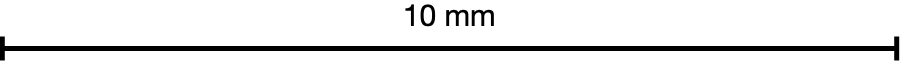
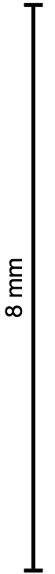
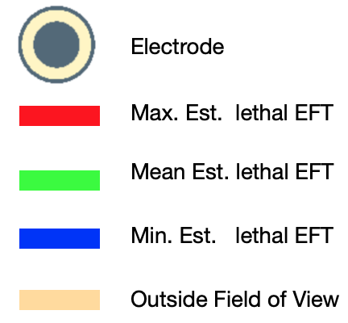

PFA Calculator Program
Instructions
- For details on how to use the hiPSC-CMs PFA Tool, read the
Context of Use (CoU),which includes
limitations of use.
- Insert the Pulsed Field Ablation (PFA) input parameters in the
“PFA input parameters” table. Hover the information icons next to each
section header for parameters definition and range of use. Check the
changes you make to the “PFA input parameters” table in the waveform
parameter interactive visual.
- Read the outputs in the “Program outputs” table to obtain
the estimated lethal Electric Field Threshold (EFT),
Absorbed Dose (AD), and Adiabatic Heating (AH)
produced by the set of input parameter selected.
- For an estimate of the cell death area due to irreversible
electroporation (IRE), insert the phase volage, $V_p$, in “Electric
field distribution and cell-death area estimation” section.
The electric field map will change accordingly showing the
estimated cell death area for the set of pulse parameter
selected and the specific electrode geometry used in this tool.
PFA input parameters
Ideal waveform parameter description and interactive
visual representation
|
Program outputs
| Lethal EFTinfo
Lethal Electric Field Threshold estimated from in vitro experiments on hiPSC-CMs measured in $[kV/cm]$. |
[$kV/cm$] |
|
|
|
| ADinfo
Absorbed Dose at the lethal EFT,
measured in $[mJ/g]$, computed using the analytical Eq (1)
presented in the CoU. |
[$mJ/g$] |
|
|
|
| AHinfo
Adiabatic Heating at the lethal EFT,
measured in $[C]$, computed using the analytical Eq (2) presented in the CoU. |
[$C$] |
|
|
|
Electric field distribution and cell-death area estimation
Here, we have used the estimated lethal EFTs from this program, and combined the results with numerical simulations of the electric field, to estimate the cell-death area as an examplar.
|
 |
|
 |
|
 |
| 0 |
|
14.622 [kV/cm] |
The map above displays the norm of the electric field in grayscale. The predicted cell-death region is highlighted in red, green, and blue, based on the estimated lethal EFT and the stregth of the electric field at the same point.
|